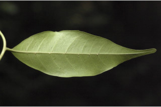
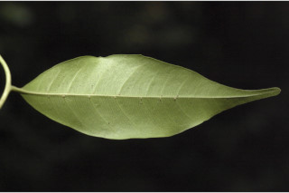

Images :


 


| Habit : | Trees up to 20 m tall. |
| Leaves : | Leaves compound , imparipinnate , to 25 cm long, alternate , spiral , pulvinate ; rachis 4.2-11.5 cm long; petiolule 0.5-0.8 cm long; leaflets 5-7, alternate , to 12 x 5 cm, elliptic , elliptic-lanceolate , apex acuminate , base cuneate , margin entire , coriaceous , glabrous ; midrib raised above; secondary_nerves 5-8 pairs, with hairy domatia in axills; tertiary_nerves admedially ramified . |
| Inflorescence / Flower : | Flowers polygamodioecious , creamy yellow; male flowers in panicles ; female flowers in spikes or racemes . |
| Fruit and Seed : | Berry , oblong , ca. 1.8 cm long, white; seeds 1-2, covered with white pulpy aril . |